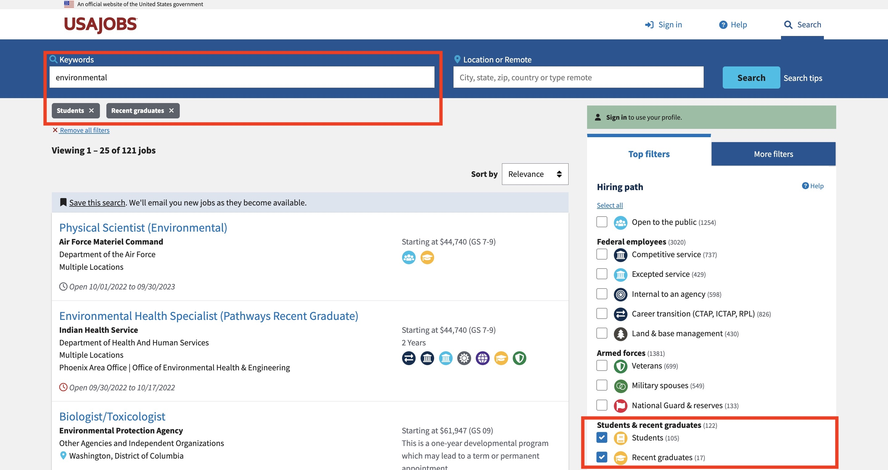
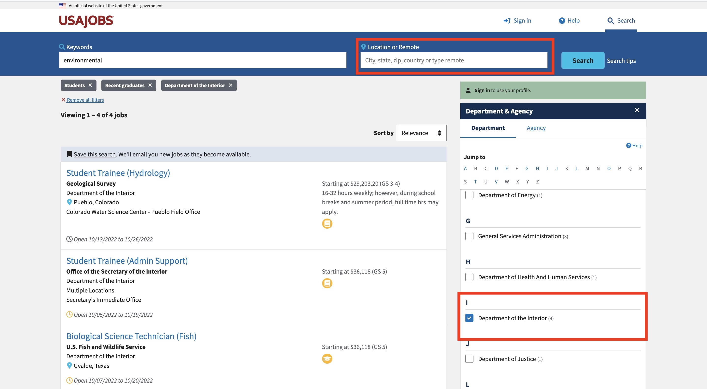

Resources
Undergraduates/Post Bachelors:
If you’re passionate about research and interested in the prospects of graduate school, I would highly suggest conducting an internship at a national laboratory! I was a 2x Science Undergraduate Lab Intern at Lawrence Berkeley National Lab, having worked with different mentors for each internship. Additionally, if you’re interested in a masters program, I’m happy to chat about my experience applying to and attending the Bren School. If you have any other questions or would like to set up a time to chat, send me a Twitter DM or LinkedIn message!
Links to internship programs:
- Science Undergraduate Laboratory Internship (SULI), DOE
- Community College Internships (CCI) Program, DOE
- Student Internships, EPA
- Summer Scholars Internship Program, NSF
- Additional Internship Programs for NOAA, EPA, NIH, etc
- Environmental Science Internships (Policy/Private/Federal)
- USAjobs.gov
Use the Keywords to your advantage: “Ecology,” “Environmental,” “Policy,” “Energy,” “Conservation,” “Data science,” or whatever field you’re interested in to work in your advantage!
Applying filters such as “Students” and “Recent graduates” is a great way to quickly find internships or Student Trainee positions. 
You can filter your search even more by specifying location and department/agency. 